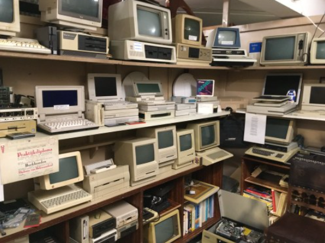
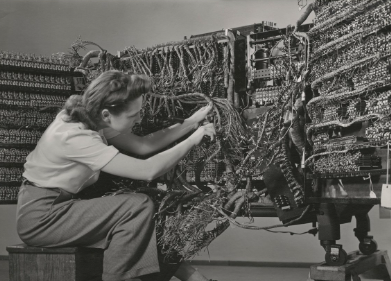
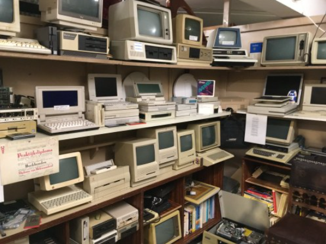
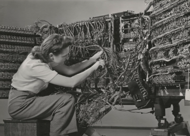

This website is part of our IS50004C Website Design Project, created to showcase some of the most significant computers from the past. Here, you will learn about the groundbreaking machines that paved the way for modern computing.
We’ve included highlights such as the ENIAC, the first-ever computer, and the Xerox Alto, which introduced many features we use today, like a keyboard and mouse. Explore our site to discover the fascinating stories behind these technological milestones!

  
 